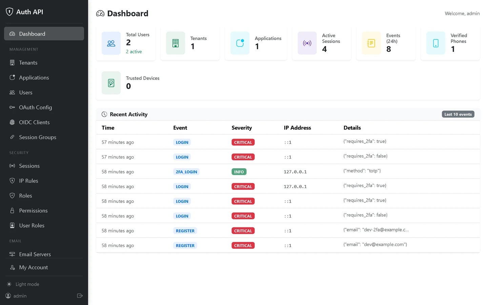
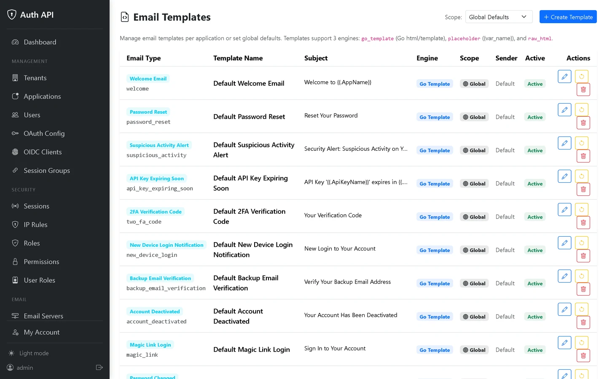
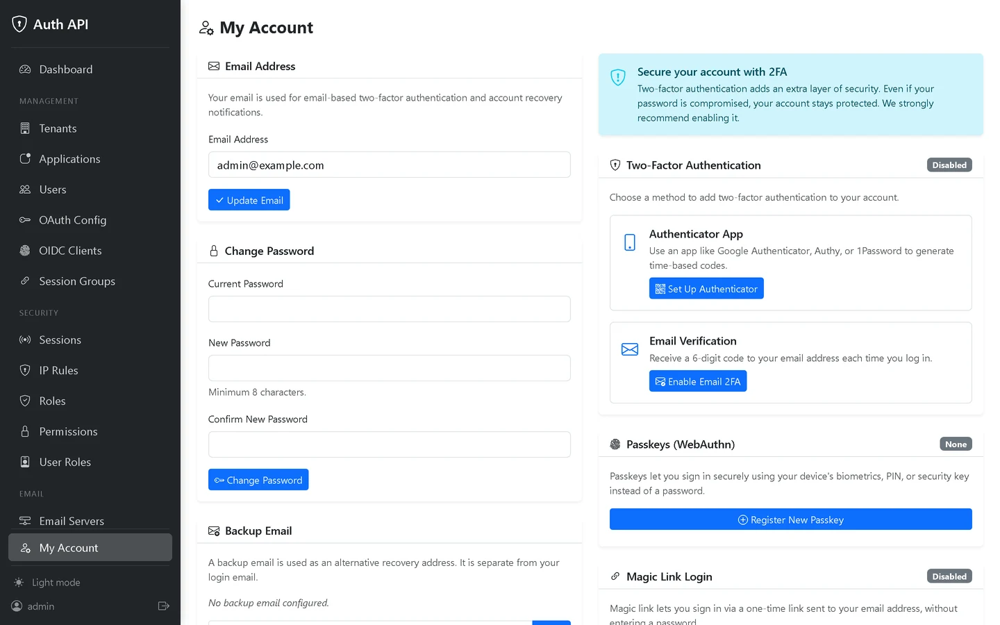
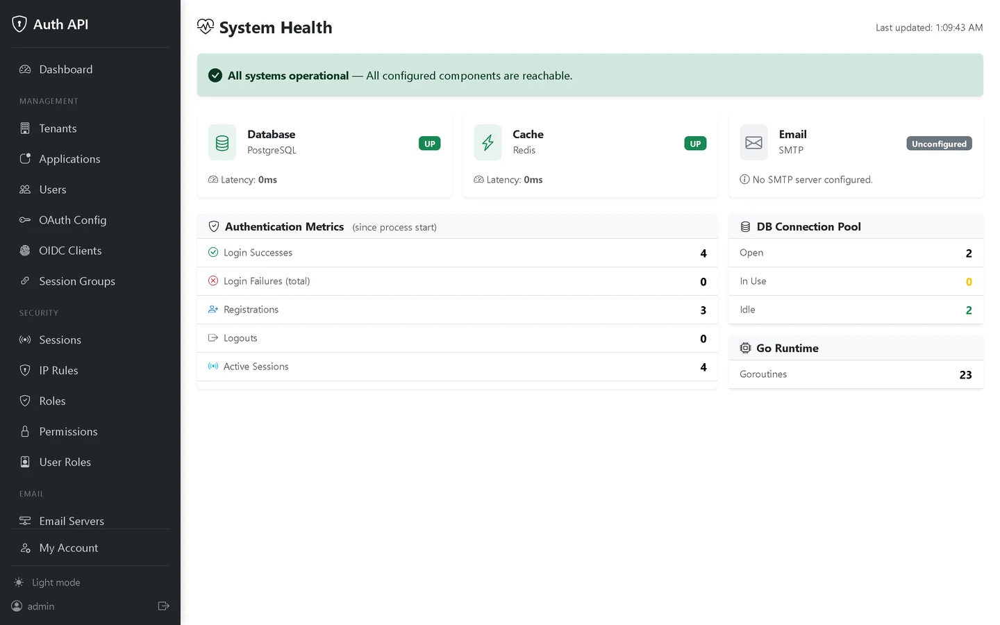

Go · Gin · PostgreSQL · Redis
Authentication your apps
can actually rely on.
A self-hosted auth API with password and social login, TOTP/email/SMS/passkey two-factor, multi-tenant RBAC, an OIDC provider and an admin GUI — all behind one small, auditable Go service.

Start here
What the API is, how it is put together, and the five-minute path to a running instance.
Integrate
Registration, login, refresh rotation, 2FA, sessions, SSO and webhooks for your frontend.
Deploy & operate
Configuration, email, migrations, backups and upgrades for a self-hosted deployment.
API reference
Every endpoint and schema, generated from the OpenAPI definition that ships with the service.
In the box
Password & tokens
Registration, login, refresh-token rotation, logout with Redis-backed JWT blacklisting, per-app password policies.
Social login
Google, Facebook and GitHub with account linking, merge confirmation and HMAC-signed single-use OAuth state.
Two-factor
TOTP, email, SMS, backup email and passkeys — plus recovery codes, trusted devices and SMS recovery fallback.
Multi-tenancy & RBAC
Tenants own applications; applications own users, roles, permissions, branding and settings.
OIDC & SSO
Act as an OpenID provider for a single app, or link apps in a session group with cross-app logout.
Operations
Admin GUI, webhooks, activity logs with anomaly detection, health and Prometheus metrics.
A look inside



Five minutes to a token
Start the stack with Docker Compose, apply the migrations and create the admin account:
- PostgreSQL and Redis come up with the compose file
- The API auto-migrates the schema on boot
- The admin GUI and the Swagger UI are served by the same process
docker compose up -d
make setup-admin
# register and log in
curl -sX POST http://localhost:8080/register \
-H "X-App-ID: 00000000-0000-0000-0000-000000000001" \
-H "Content-Type: application/json" \
-d '{"email":"user@example.com","password":"Str0ng!Passw0rd"}'
curl -sX POST http://localhost:8080/login \
-H "X-App-ID: 00000000-0000-0000-0000-000000000001" \
-H "Content-Type: application/json" \
-d '{"email":"user@example.com","password":"Str0ng!Passw0rd"}'